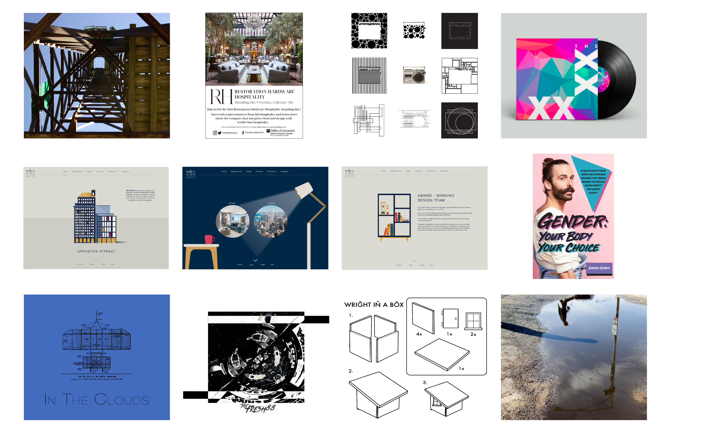

About me
Hello! I’m Ericka Cerda, a born and raised Chicagoan with a passion for design in all the forms it takes! Living in a big city, I have been able to draw much of my inspiration from the historical architectural design and breathtaking skyline. As an avid lover of Graphic Design, I understand the need for effective yet innovative design. My design aesthetic is minimal yet focuses on functionality, I believe good design is necessary in our digital world.
I am currently perusing my BFA in Graphic Design and BS in User Experience Design at DePaul University.
I hope you enjoy my work, please feel free to contact me with any questions!
